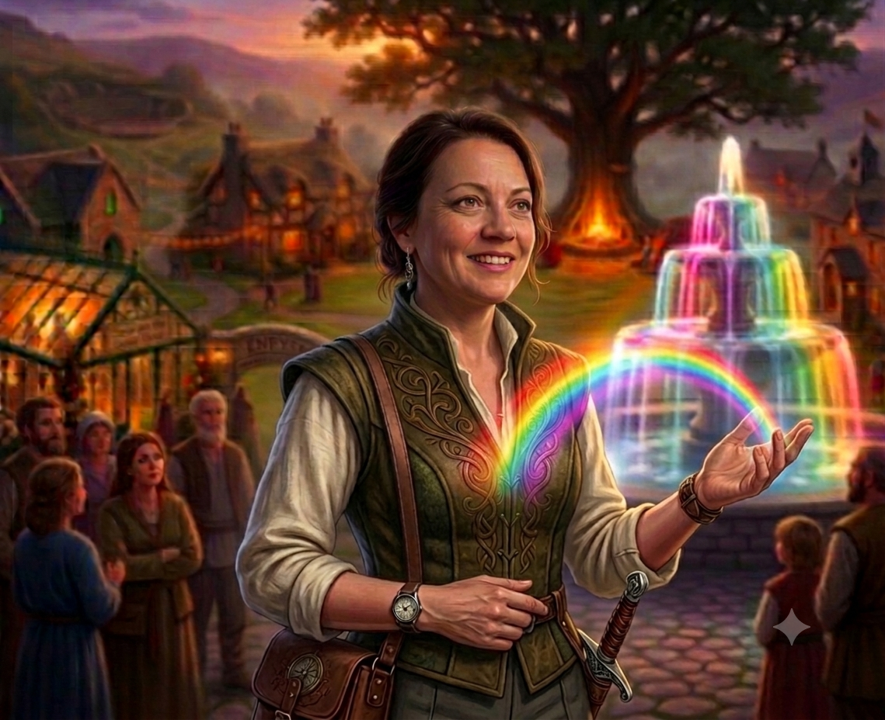

Signal, category, the key relationships, the launches, and the founder-led coaching and speaking. Rachel is the recognition surface the whole business converts through, and she holds the constitutional voice of the work — the things only she can do. PowerVox grows through Rachel's signal, methodology and relationships; the structure exists to protect that.
The founder dynamic is candid: the biggest risk to momentum is Rachel's attention being pulled toward new ideas before current commitments are delivered. The answer is not restraint imposed from below but a structure that lets her do what only she can do — the signal, the category, the rooms — while Hannah guards the substance ("is the last thing finished?") and Scott guards the capacity ("does this fit the diary and the cadence?"). She also carries the open Sales & BD seat in the interim, which means several conversion KPIs are parked with her temporarily and belong to the fourth keeper when they arrive.
| Area | What success looks like in 12 months |
|---|---|
| Signal & category | The content engine, speaking, Substack, the launches; the sacred nouns and category language (Lexicon owner for definitions). |
| Root to Grow delivery | Delivers cohorts live with Hannah — capacity sets the count at five in year one. |
| The Greenhouse | Presence and community; the monthly rhythm; the relational heart of the work. |
| The elicitation unlock | Externalising the tacit TOM collateral — the questions, the sequence, the reading of the room — is Rachel's job and the genuine unlock for the productised method. |
| Conversion (interim) | Carried for the open seat: RtG→Greenhouse invitations, TOM clients into PowerVox streams, qualified inbound. |